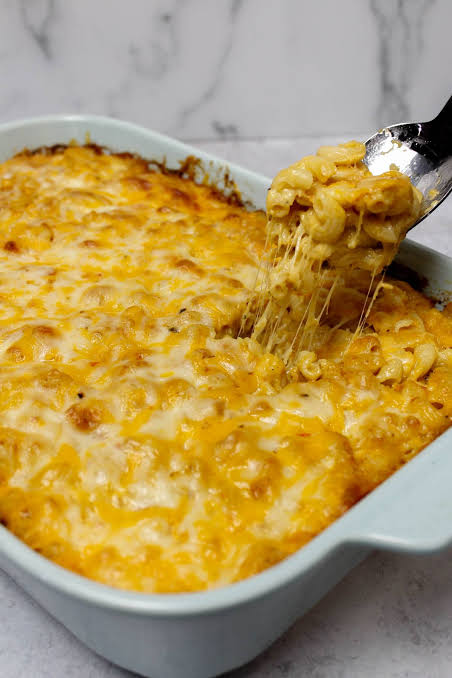

Home
Mac and Cheese

Ingredients
- Macaroni Pasta
- Butter
- Garlic
- Flower
- Milk
- Paprika
- Cheese
Steps
- Bring a large pot of salted water to a boil and cook the macaroni until al dente. Drain and set aside.
- >Melt the butter in a large saucepan over medium heat.
- Peel and finely mince the garlic, then add it to the melted butter and cook until fragrant.
- Stir the flour into the butter and garlic, whisking continuously to form a smooth roux.
- Slowly pour in the milk while whisking constantly until the sauce becomes smooth and begins to thicken.
- Season the sauce with paprika and stir well to combine.
- Add the grated cheese a little at a time, stirring until it has completely melted into the sauce.
- Fold the cooked macaroni into the cheese sauce and stir until every piece is evenly coated.
- Serve the mac and cheese while hot, or transfer it to a baking dish and bake until the top is golden, if desired.